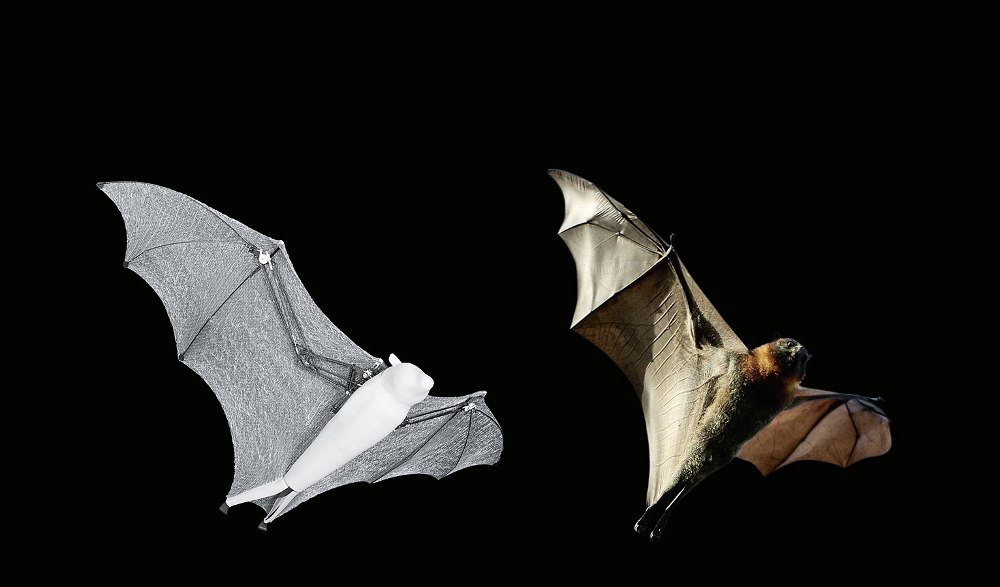
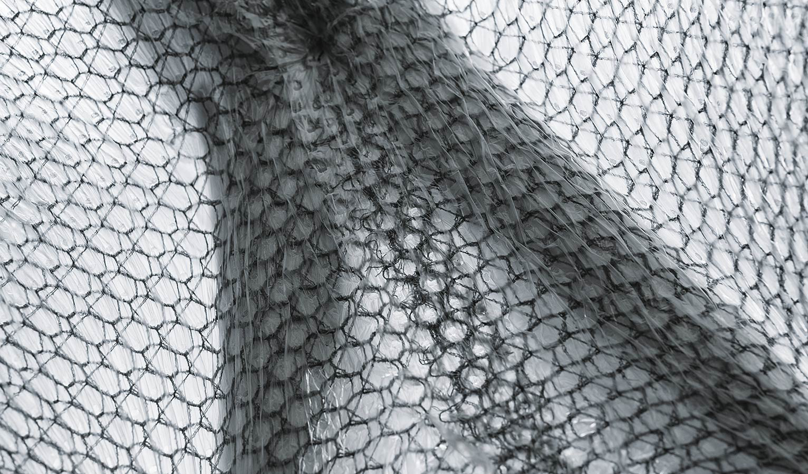
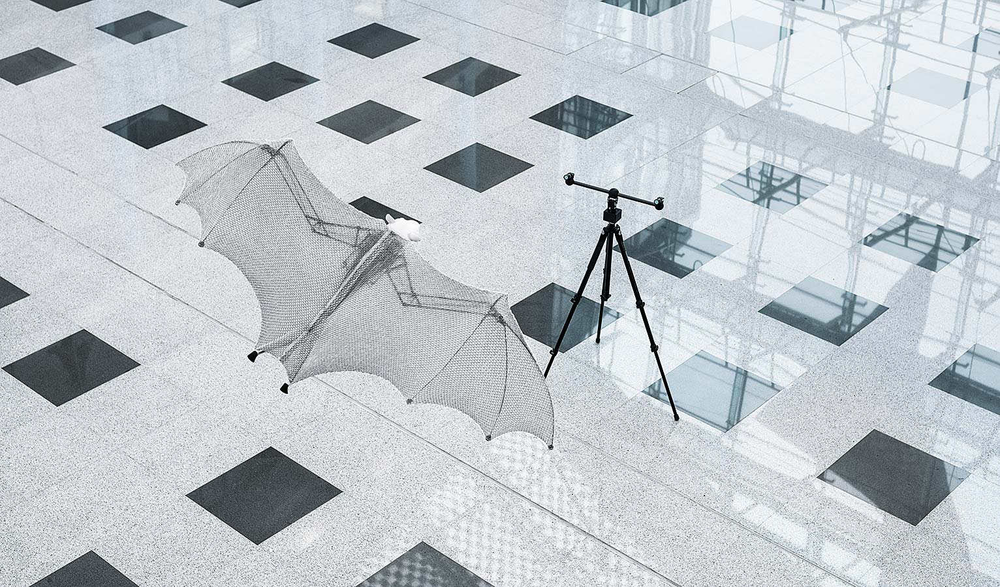

BionicFlyingFox
运用智能运动学的超轻型飞行物
为了研发BionicFlyingFox，我们仿生学习网络的开发人员仔细研究了狐蝠这种生物，并以技术手段模拟了它独特的飞行模式。通过集成机载电子板与一个外置运动追踪系统的相互配合， 超轻型飞行物能够在特定空间内进行半自主飞行。

狐蝠（英文：flying fox）是蝙蝠的一种。蝙蝠是唯一可以主动飞行的哺乳动物。狐蝠的一个典型特征是它精细且富有弹性的翼膜，从延长的前掌骨与指骨一直延伸至脚关节。在飞行时， 狐蝠能用手指有针对性地控制翼膜的曲率，从而能够以符合空气动力学的方式在空中灵活飞行。这样一来，即使在慢速飞行时，它们也能获得最大升力。

模拟自然样本的灵活运动学
人造狐蝠两翼展开宽度为228厘米，体长为87厘米，整体仅重580克。就如自然界的狐蝠一样，人造狐蝠的翼动力学也由手肘两个关节组成，上面绷了一层有弹性的翼膜，翼膜从两翼一直延伸至后肢。如此一来，人造狐蝠两翼的面积相对较大，并能实现极小的翼负载。与自然界的狐蝠一样，BionicFlyingFox的所有关节点也都处于同一平面，以便它可以单独控制机翼以及折叠双翼。
对理想飞行轨迹进行机器学习
相机捕捉的图像传送至中央主机。中央主机评估数据，并像外部领航员一样协调飞行。为此，中央主机上具有预编制的飞行路径，能够预先确定BionicFlyingFox飞行时的轨迹。为了 能以最佳方式按照规定路径飞行，人造狐蝠可借助它的机载电子板与复杂的行为模式自行计算必要的机翼运动。

专门研制的翼膜
该仿生模型的翼膜极薄、超轻、但却十分强韧。它由两片气密薄膜和一块氨纶织物组成，它们通过约45000个焊接点紧密地焊接在一起。由于翼膜具有足够的弹性，即使在收起双翼时，它们也几 乎没有褶皱。织物的蜂窝结构防止翼膜上的小裂纹进一步扩大。因此，即使翼膜出现轻微损伤，BionicFlyingFox自己仍能继续飞行。

精巧的结构：机身内置的机载电子板与两翼中的机械构造相互配合
在特定空间内进行半自主飞行
为了能使BionicFlyingFox在特定空间内进行半自主飞行，它需要与所谓的运动追踪系统通讯。运动追踪系统能够持续检测它的位置。同时系统还能规划飞行轨迹，并提供必要的控制指令。 人可以手动控制飞行物的起飞与降落。在飞行中，自动驾驶仪掌管飞行任务。
